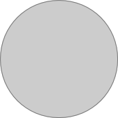

WTOW
21:34
100%
12:45

10分钟后提醒
滑动关闭闹钟

闹钟-响起页

触摸此处，十分钟后闹钟再响
闹钟-响起时
1.闹钟音量由小至大逐渐响起。
2.闹铃响起时，根据当前的时间，显
示问候语：
6：00 - 9：00 —— 早上好
9：01 - 12：00 —— 上午好
12：01 - 18：00 —— 下午好
18：01 - 次日6：00 —— 晚上好
3.屏幕显示当前地区的天气状况：文字显示气温以及天气预报。
4.屏幕显示当前时间，取设备系统时间。
5.闹钟停止：从下至上滑动，跳转至闹钟-首页并响起天气预报模拟声。
早上好！
18度 晴天